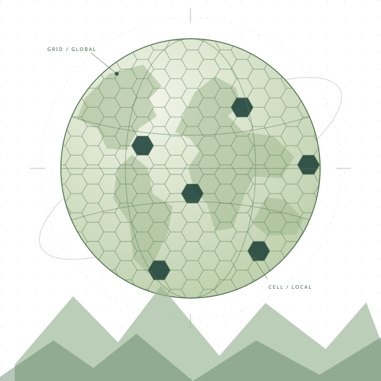

Grid foundations
Tessellations, reference systems, indexing and multi-resolution representations.
A new meeting place for the DGGS community
International conference on
Discrete Global Grid Systems
Bringing researchers, developers and practitioners together to explore how we grid, understand and work with our planet.
Discover DGGSCon
DGGSCon is a conference dedicated to the research, development and real-world applications of Discrete Global Grid Systems.
DGGS organize the Earth into systems of cells, creating a foundation for connecting and analysing geospatial information. The questions span mathematics, software, standards and the decisions we make with data.
We’re bringing those conversations together: from the people designing grids to the people putting them to work.
Organized by
Tessellations, reference systems, indexing and multi-resolution representations.
Implementations, interoperability and the systems that turn ideas into usable tools.
Connecting observations across scales, with spatial analysis and related AI methods.
Earth observation, environmental monitoring and practical geospatial challenges.
One day of workshops and tutorials, followed by two days of conference sessions. All dates are tentative.
Explore methods, tools and implementations through focused learning and discussion.
A mix of peer-reviewed research papers, application talks and industry presentations on DGGS foundations, development and real-world use.
Bring working systems into the conversation and connect across research, industry and government.
Planned journal special issue. We are planning a journal special issue for selected peer-reviewed research papers. The journal, submission and review details will be announced once confirmed.
The detailed schedule, keynote speakers, review process and publication arrangements will be announced as they are confirmed.
Banff Centre, Banff, Alberta, Canada — tentative venue.
A mountain setting for bringing the DGGS community together—with space for focused sessions, new connections and conversations beyond the conference room.
Dates and the Banff Centre venue are tentative and subject to confirmation. Accommodation and travel guidance will follow as arrangements are confirmed.
For researchers, developers, practitioners and anyone working with a gridded world.
The call for contributions, submission categories and deadlines will be announced here.
Registration details, fees and accommodation information will follow as planning progresses.
Sponsorship opportunities and a conference contact will be shared when available.
The tentative event dates are October 25–27, 2027: workshops and tutorials on October 25, followed by two days of conference sessions on October 26–27. Arrival is planned for October 24. Both the dates and the Banff Centre venue are subject to confirmation.
Registration and submissions are not open yet. This page will be updated with the relevant links and deadlines when they are available.
DGGSCon is organized by the University of Calgary and the University of Guelph. Organizing committee members, Programme Chairs and advisory appointments will be announced as roles are confirmed.
A world of cells.
A community of people.